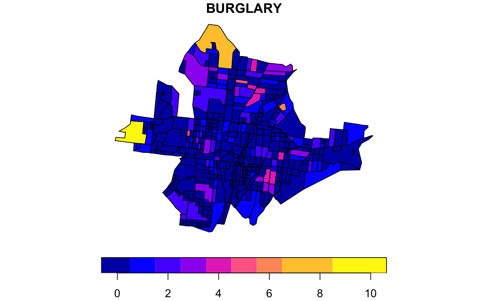

Crime and socio-demographic data for the Clifton, Walnut Hills, Evanston, and Avondale neighborhoods in Cincinnati, OH for the last 6 months of 2008.
cincinnati
An sf data frame with 457 rows, 72 variables, and a geometry column:
Polygon ID
Polygon area
Census block ID
Census block group ID
Census tract ID
5 digit code for the county (Hamilton County, Ohio). Not to be confused with zip code
Metropolitan statistical area ID
Population on the block
Population on the block broken down by gender
Population on the block broken down by age (From A to B)
Median age on the block
Population aged X and over
Male population aged X and over
Female population aged X and over
Number of people who marked a race on the survey
White population
Black population
American Indian population
Asian population
Hawaiian population
Population self-identified as other race (non white, black, asian or hawaiian)
Number of people who did not mark any race on the survey
Adjusted white population
Adjusted black population
Adjusted American Indian population
Adjusted Asian population
Adjusted Hawaiian population
Adjusted other-race population
Population breakdown by Hispanic and Non-Hispanic
Non-Hispanic white population
Population living in households
Population living in group quarters instead of traditional households
Institutional population
Non-institutional population
Number of households
Number of family households
Number of non family households
Average household size
Average family size
Number of housing units
Number of housing units occupied
Number of housing units vacant
Occupied housing units (owner occupied)
Occupied housing units (renter occupied)
Average household size of owner occupied housing units
Average household size of renter occupied housing units
Population density
Counts of burglary
Counts of assault
Counts of theft
Burglary dummy: ‘1’ if there is at least 1 incident, ‘0’ otherwise
Assault dummy: ‘1’ if there is at least 1 incident, ‘0’ otherwise
Theft dummy: ‘1’ if there is at least 1 incident, ‘0’ otherwise
Grubesic, T, R. Wei and A. Murray (2014). Spatial clustering overview and comparison: accuracy, sensitivity and computational expense. Annals, Association of American Geographers 104, 1134-1156.
Sf object, units in us-ft. GRS80 /Lambert Conformal Conic.
if (requireNamespace("sf", quietly = TRUE)) { library(sf) data(cincinnati) plot(cincinnati["BURGLARY"]) }